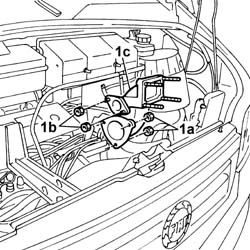

5520C64 CONNECTOR BETWEEN HEATING FLANGE AND INTAKE MANIFOLD - R.R.
- Path
- Procedures > 55 ELECTRICAL EQUIPMENT > 5520 ENGINE STARTING > 5520C COLD STARTING SYSTEM (DIESEL ENGINES) > 5520C64 CONNECTOR BETWEEN HEATING FLANGE AND INTAKE MANIFOLD - R.R.
- Kind
- repair procedure (removal / refitting; the operation number is the code)
- Applies to
- engines: 2.8 JTD 8V; all production periods
- Interactive page
- https://sloeber94.github.io/elrnDB-fDct/en/#/244001356
Applies to: engines: 2.8 JTD 8V; all production periods
 Removing
Removing
 Refitting
Refitting
Applies to: engines: 2.8 JTD 8V; all production periods
Refitting
Removing